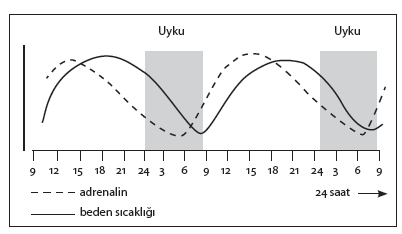
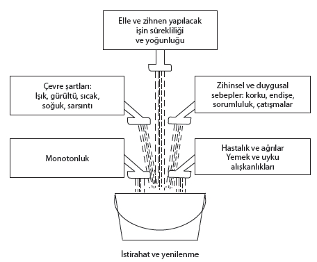

Vardiya çalışması
Bu çalışma biçimi, çalışanın normal biyolojik, psikolojik ve sosyal yaşama kalıbını ciddi biçimde bozar. Vardiya çalışması bedenin normal biyolojik ritmi ile çeliştiği için kronik yorgunluğa ve bireyin aile ve sosyal hayatının yıkılmasına sebep olur.
Çalışma düzeni
Modern çalışma sistemleri, yapılacak işleri gittikçe daha düşük beceri gerektiren, iş başarmaktan kaynaklanacak hiçbir doyum duygusu vermeyen, fakat çalışanı çok sıkı bir makine denetimi altında tutan gittikçe daha küçük parçalara bölmüştür. Bu tür işler “insanlığa aykırı” olarak kabul edilmektedir.
Çalışma organizasyonu
Modern çalışma organizasyonları çoğunlukla otoriter bir denetime yol açan, üst kademedekilerin alt kademedekileri yönlendirdikleri ve kontrol ettikleri otoriter bir hiyerarşiyle düzenlenmiştir. Bu tür hiyerarşik düzenlemeler organizasyon içindekiler arasında sık sık çatışma ve gerginliğe sebep olmaktadır.
Modern yönetim anlayışında Batı ve Japon modellerindeki farklılıklardan kaynaklanan aynı düşünce ve uygulamalar vardır. Ancak ister Japon modelindeki gibi hiyerarşik katları azaltarak olsun, ister çoğaltarak, eşitler arasında ve ast-üst ilişkileri içinde insanlararası ilişkilerin düzenlenmesini sağlayan modern iletişim sistemleri uygulanmadıkça, çatışmalar kaçınılmaz olur. Bu da işletmenin verimliliğini doğrudan etkileyen olumsuz sonuçlar verir.
Bir çalışanın ürettiği değer ile bunun karşılığında alacağı ücret arasındaki ilişki bir ticari kuruluşun temel fonksiyonudur. Çalışanın ücretini artırarak hayat şartlarını yükseltme çabası, kurumların en az yatırım ve harcamayla en çok “kâr”ı elde etme düzenlemeleriyle çatışır. İş hayatındaki streslerin büyük çoğunluğu bu çatışmadan kaynaklandığı için, biz de konuya buradan giriyoruz.
Emeğin piyasa fiyatı birçok faktör tarafından belirlenir. Ancak çalışanların pazarlık gücünün sınırlanması onlar adına birçok stresi de beraberinde getirir. Düşük ücret, iş güvencesi, geçimi sağlayabilecek ücret uğruna fazla mesailere ve vardiyalardan sağlanacak primlere aşırı bağlanma çalışan birey ve ailesi için büyük streslerin tetikleyicisidir. Çünkü yukarıda sıralanan –ve bilmeyen için basit gibi görünen– bu dört sebep, kötü evde yaşamanın, yetersiz beslenmenin, çocuklarına iyi bir eğitim yaptırtamamanın, hayatın zor günleri için küçük bir tasarruf bile verememenin, hiçbir zaman borçtan kurtulamamanın uzun vadede ruh ve beden sağlığı üzerinde doğuracağı sonuçları içinde barındırmaktadır.
Fakirlik, tek başına hem ruh hem de beden sağlığı açısından ciddi problemler getirir. Şikago’da gettoda yaşayan zenciler arasında kansere rastlanma sıklığı hem siyahlardan hem de genel ulusal ortalamadan 1,5 kere daha fazladır.
Gerek ABD, gerek İngiltere’de alt gelir düzeyinde boşanma sıklığı, orta ve üst gelir düzeyine kıyasla iki kere daha fazladır.
Fakirlik, sebep olduğu sonuçlar bir yana, kendisi başlı başına büyük bir stres kaynağıdır. Çünkü insanı sevdiklerine ve çevresindekilere çok basit bile olsa bir şeyler vermekten alıkoyar. Vermek güçlülüktür. İnsanın duygularını ifade etmesi ve ilgisini ortaya koyması için –maddi değeri küçük bile olsa– sevdiklerine verecekleri bir araçtır. Fakirlik bu imkânı insanın elinden önemli ölçüde alır. Hiç şüphesiz hediye maddi değeriyle ölçülmez, duyguları ortaya koymak için madde şart değildir. Ancak yine de fakirlik “verme”yi –eli açık olmak bir yana– gönül zenginliğini bile önemli ölçüde sınırlar.
İşsizlik
İşsizlik düşük ücretle beraber gitmektedir. Çünkü düşük ücretli işler, genellikle iş güvenliği açısından da zayıf işlerdir. İngiltere’de işsizlik, niteliksiz işgücünde, genel ortalamadan 2,5 kere daha fazladır. Düşük ücret alan niteliksiz işçi, kapıya en yakın kişinin kendisi olduğunun farkındadır ve böyle sürekli tehdit altında bulunmak bir kaygı doğurur.
İşsizliğin doğuracağı sonuçların ciddiyeti, iş kaybının sürpriz olması, işsizlik süresi gibi birçok faktöre bağlıdır. İşsizlik süresinin uzaması, birikmiş olan paranın azalması kaygı ve depresyona sebep olur. Depresyon yerleşmiş bir ruh hali durumuna gelince, kişinin enerjisi bütünüyle tükenir, günün tamamını yatakta geçirmeye başlar. Ayrıca özellikle erkeklerde kendine güven ve saygının azalması, değersizlik duyguları görülür. Böyle bir durum gerek eşler arasında, gerek ana-baba ve çocuk arasında yıkıcı problemlerin doğmasına sebep olur.
İşsizliğin doğurduğu sonuçlar bu sayılanlardan ibaret değildir. İşsizliğin doğurduğu bazı sonuçlar yanında, yukarıda sayılanlar hafif kalmaktadır. İşsizlikle intihar arasında, işsizlikle alkol ve uyuşturucu kullanımı arasında ve işsizlikle suçluluk arasında bilimsel araştırmalarla ortaya konmuş çok açık ilişkiler vardır.
Vardiya düzeni ile çalışma ülkemizin endüstrileşmesine ve gelişmesine paralel olarak artmaktadır. Bu sistemi çok uzun süreden beri uygulamakta olan ülkelerde yapılan araştırmalar, sistemin insan sağlığı üzerinde son derece olumsuz ve yıkıcı etkileri olduğunu ortaya koymuştur.
Vardiya düzeni ile çalışma çeşitli fabrikaların yanı sıra, ulaşım, posta ve haberleşme, sağlık hizmetlerinde de uygulanmaktadır.
Vardiya uygulamaları çeşitlidir. Gece vardiyası olmaksızın gündüz iki vardiya, gece vardiyasıyla beraber üç vardiya, hafta sonunu da içine alan üç vardiyalı sistemler, vardiya düzeninin belli başlılarıdır. Birçok işte, 24 saatin bütününü içine alan, hafta sonlarının bütününü içine alan sistemler uygulanmaktadır. Ayrıca vardiya sistemleri dönüşüm düzenleri açısından da çeşitlidir. Aynı vardiyada 7 günden fazla çalışmak, uzun süre olarak kabul edilir.
Vardiya düzeni sağlığı ve esenliği iki temel noktadan etkilemektedir. Birincisi vardiya düzeni özellikle uyku ve sindirim açısından bedenin biyolojik ritmi ile çelişir; ikincisi aile hayatını ve sosyal hayatı bozar.
İnsanın temel bedensel faaliyetlerinin belirli bir kalıbı vardır. Uyku uyanıklık düzeni bunun en belirgin ve önemlisidir. Beden sıcaklığı ve çeşitli hormonların düzeyi insanın günlük hayatını sürdürmesi için gün içinde dalgalanma gösterir. Bedensel aktivite uyanmayı izleyen günün ilk saatlerinden başlayarak artar ve uyku saatine doğru azalır.
Şekil 15 beden sıcaklığı ve aktiviteyi belirleyen en önemli hormonlardan biri olan adrenalinin 48 saatlik süre içindeki dalgalanışını göstermektedir.
Sindirim ve uyku faaliyetleri de birçok başka beden faaliyeti gibi çok sıkı bir günlük ritme bağlıdır. Bu biyolojik ritmler sosyal çevre ile eşzaman (senkronize) olmuşlardır ve böylece çoğu kez saate bakmadan zamandan haberdar olabiliriz.
Biyolojik ritm, değişikliğe karşı çok dirençlidir ve çalışma, yeme, uyuma düzeninde yeni bir kalıba uyum son derece yavaş olmaktadır. Bilimsel olarak birçok araştırmayla ortaya konmuş olan bu olgunun doğurduğu önemli sonuç şudur: Çalışma günleri sırasında vardiya düzenine uyum göstermeye başlayan biyolojik ritm, dinlenme günleri sırasında hızla eski kalıbına geri dönecek ve dinlenme günlerini izleyen çalışma döneminde zorunlu olarak yeni bir uyum süreci başlayacaktır.

Şekil 15: Normal Biyolojik Ritmler
İş stresi başlığı altında insanların iş hayatından yansıyan streslerin genel bir çerçeve içinde ele alınması amaçlanmıştır. Vardiya düzeninde çalışma bunlardan biridir. Ancak vardiya düzeninde çalışmanın birey hayatında öylesine özel ve kaçınılmaz etkileri vardır ki, bunları genel hatları ile de olsa yazmanın –konu ile ilgilenmeyenleri sıkmak pahasına– yararlı olacağını düşündük.
Uyku
Gece vardiyasında çalışmak gündüz uyumak demektir ve bu da uykunun hem süresini, hem kalitesini etkiler. Bu etkinin nasıl meydana geldiği uyku bölümü okunduğunda kolayca anlaşılabilir.
Yapılan araştırmalar gece vardiyası çalışanlarının bir ila iki buçuk saat daha kısa uyuduklarını, rüyalı uykunun daha kısa olduğunu, dış dünyadan yansıyan uyaranlarla daha sık kesildiğini ortaya koymuştur. Muhtemelen bütün bunların sonucunda azalan uyku miktarı zaman içinde birikerek kişinin kendisini sürekli olarak yorgun, huzursuz, sinirli ve gergin hissetmesine sebep olmaktadır.
Yapılan çeşitli araştırmalarda uyku bozukluğuna rastlama sıklığı gündüz çalışanlarda % 5 - % 11 arasında değişirken, gece vardiyasında çalışanlarda % 50 - % 62 arasında değişmektedir.
İştah ve sindirim
Birçok araştırma gece vardiyasında çalışanlarda görülen temel sağlık problemleri arasında başta ülser olmak üzere çeşitli sindirim sistemi hastalıklarının olduğunu ortaya koymuştur.
Bu sonucu iki biçimde yorumlamak mümkündür. Birincisi, gece vardiyasında çalışanlarda görülen sindirim sistemi hastalıklarının sebebi doğrudan doğruya düzensiz yemek yemeye bağlanabilir ve sindirim faaliyetinin zamanının biyolojik ritme uygunluk göstermemesi olarak yorumlanabilir. İkincisi sindirim problemleri ve ülser psikosomatik olarak yorumlanabilir. Aşırı ve sürekli yorgunluk, vardiya düzeninde endişe ve stres böyle bir hastalığın gelişmesi için yeterlidir.
Bütün bunlara ek olarak bilinmektedir ki; çay, kahve, alkol ve sigara sindirim faaliyetini bozmaktadır ve bu maddeler gece vardiyasında çalışanların çoğunluğu tarafından çok kere yaygın olarak, aşırı ölçüde kullanılmaktadır.
Aile hayatı
Vardiya düzeninde çalışmanın kaçınılmaz sonuçlarından biri de, aile hayatının –çeşitli ölçülerde değişen– zarar görmesidir. Vardiya düzeninde çalışan kişinin çocuklarıyla bir masa başında toplanması, eşiyle dost toplantısına gitmesi, çocuğunun okul problemleriyle ilgilenmesi, düzenli bir cinsel hayatı sürdürmesi mümkün gözükmemektedir. Eğer vardiya düzeninde çalışan evin kadınıysa, üzerindeki yük daha da ağırlaşmakta, evin düzeni daha derinden sarsılmaktadır.
Her türlü sosyal faaliyet gündüz çalışan insanlara göre düzenlendiği için, gece vardiyasında çalışanların durumlarını ifade eden en iyi tanım “sosyal ölüm”dür. Çünkü gece vardiyasında çalışanlar bir süre sonra kendilerini kaçınılmaz olarak çevrelerinden soyutlanmış olarak hissetmeye başlamaktadırlar.
Sonraki yıllar
Yapılan çok sayıda araştırma gece vardiyasında çalışmanın doğurduğu sonuçların sadece çalışılan süreyle sınırlı olmadığını da ortaya koymaktadır.
Norveç’te yapılan böyle bir araştırmada gece vardiyasında çalışanlarda akıl ve ruh sağlığı problemlerine ve sindirim sistemi hastalıklarına rastlanma sıklığının gündüz çalışanlara kıyasla çok daha yüksek olduğu görülmüştür.
Bu araştırma, daha önce de belirttiğimiz bu gerçeklerden başka, bir önemli gerçeği daha ortaya koymuştur. Gece vardiyası çalışması sırasında sağlıklı kalmış birçok kişi, bu şekilde çalışmayı bıraktıktan sonra, eski çalışma düzeninden ötürü hastalanmaktadır.
Vardiya düzeninde çalışmaya uyum sağlanabilir mi?
Bu soruya bedensel açıdan verilecek cevap “hayır”dır. Daha önce de anlatıldığı gibi insanlık tarihinin başından beri gündüze göre düzenlenmiş olan biyolojik ritmin bütünüyle ve tam anlamıyla geceye göre düzenlenmesi mümkün değildir.
Genel olarak gençlerin vardiya düzenine daha kolay alıştıkları bilinmektedir. Ancak vardiya düzeninde çalışma süresi uzadıkça sağlık problemleri görülme ihtimali de artmaktadır.
Yine yapılan araştırmalar yaşı kırk ve ellinin üzerinde olanların gece vardiyasında çalışmaya başlamalarının birçok açıdan sakıncalı olduğunu ortaya koymuştur. Aynı şekilde gece vardiyasında çalışmaya başlayacak kişinin geçmişinde sindirim sistemiyle ilgili bir problem olmaması gerektiğini, epilepsisi olanların, diyabetiklerin (şeker hastalarının) ve tiroid beziyle ilgili bir problemi olanların da gece vardiyasında çalışmaya uygun olmadıkları bildirilmektedir.
İnsan sağlığının bedensel ve ruhsal açıdan iş hayatından yansıyan çok yönlü streslerin etkisi altında kaldığı açıktır. İş hayatının doğurduğu en önemli stres kaynaklarından birisi –pek çok kişi için birincisi– insanlararası ilişkilerdir. Birçok araştırma, koroner kalp hastalıkları, sindirim sistemi hastalıkları, yüksek tansiyon, gerginlik ve depresyona kişinin işinden ve çalışma şartlarından memnun olmayışının sebep olduğunu bildirmektedir. İş hayatında strese yol açan durumların başlıcalarına birlikte göz atalım:
Amirlerle doğrudan çatışma
Çalışanın kendini amirinden daha yetenekli veya üstün görmesi, ya da amirin ilişkiyi böyle algılaması amirin çalışanın işinden bütünüyle memnun olmaması, amirin kılı kırk yarar, vesveseli olması çalışanlar için büyük bir stres kaynağıdır. Böyle bir amiri memnun etmek mümkün olamayacağı için çatışma, sürtüşme ve bunların doğal sonucu gerginlik günlük hayatın bir parçası olur.
Bazı yöneticiler görevlerinin sadece “yanlışları görmek” ve bunları düzeltmek olduğuna inanırlar. Oysa modern yönetim önemli ölçüde, “doğruları yakalamak” ve onunla ilgili olumlu geri-bildirimlerde bulunmak, daha sonra yanlış olanı birlikte bulmak ilkesine dayanır.
Bazı yöneticiler ise her işi kendileri yapmak isterler ve yetkilerini kullandırmayı, kendi önemlerinde azalma olarak görürler. Böylece hem zamansızlıktan hem de birlikte çalıştıkları insanların beceriksizliklerinden şikâyet ederler. “Kendileri gibi” bir çalışana rastlayamamış olmaktan ötürü çok üzgündürler. Oysa, kendileri gibi biriyle bir hafta bile çalışamayacaklarını düşünmezler.
Çalışan kişinin amiriyle uyum içinde olması, işinden aldığı doyumu ve verimliliğini doğrudan etkiler. Siz, kendi üst yöneticinizle ne kadar uyum içindesiniz? Bunu öğrenmek isterseniz, aşağıdaki ölçeği doldurun.
Aşağıdaki ifadelerin sizin için gereklilik derecesini şu ölçüleri kullanarak belirtin.
0- Kesinlikle geçerli değil
1- Kısmen geçerli değil
2- Kısmen geçerli
3- Bütünüyle geçerli
— 1. Amirimin, aldığım kararların arkasında olacağını bilirim.
— 2. Amirim benimle oturmak ve meseleleri konuşmak ister.
— 3. Amirim benim görüşlerime saygı duyar ve ihtiyaç hisseder.
— 4. Amirim işimde bana iltifat eder.
— 5. Fikirlerimle işe yaptığım katkılardan ötürü amirimden
tam güven alacağımı biliyorum.
— 6. Amirimi hiçbir endişe duymadan eleştirebilirim.
— 7. İşimi etkileyen kişisel bir problemimi amirimle
konuşabilirim.
— 8. Amirim beni işte ne olup bittiğinden haberdar ederek
kendimi güçlü hissetmemi kolaylaştırır.
— 9. Almış olduğum bir kararı gözden geçirmesini rahatlıkla
amirimden isteyebilirim.
Cevaplama puanlarınızı toplayarak, kendinize uyan gruba göre yorumlayınız.
21-27 puan: Olumlu desteklenme, düşük iş stresi.
14-20 puan: Orta düzeyde desteklenme, orta düzeyde iş stresi.
0-13 puan: Düşük desteklenme, yüksek iş stresi.
Rol çatışması
Özellikle ara kademelerde olanların problemidir. Üst kademeden gelen emirle en alt kademedekilerden yapılması beklenenleri gerçekleştirmek her zaman çok kolay olmaz. Genellikle bu tür görevlerde kişilere verilen sorumluluklarla yetkiler aynı ölçüde değildir. Ara kademedeki kişi çok sınırlı yetkileriyle geniş sorumluluklarını gerçekleştirmek zorundadır. Bu durum da çok kere özellikle alt ve orta kademeler arasında gerginlik ve sürtüşmeye yol açar.
Rolde belirsizlik
İşin amaçlarının ne olduğunu tam anlamıyla bilmemek, yaptığı işin bütün içinde ne anlam taşıdığından haberdar olmamak, çalışanlarda gerginliğe ve isteksizliğe sebep olmaktadır. Aynı şekilde kişinin sorumluluk sınırlarının iyi çizilmemiş olması, görevin kişiden beklediklerinin açık olmaması, çalışanları çelişkiye düşürmektedir.
Örneğin, ülkemiz havayollarında çalışan hostesler görevlerinin Türk insanına hizmet etmek olduğunu bilmemektedirler. Başlangıçta bu kendilerine söylenmiş olsa bile, ortalama iç ve dış hat havayolu yolcusunun nitelikleri ve muhtemel talepleri yeterli açıklıkta ortaya konmamaktadır. Bunun sonucu olarak ülkemiz havayolu hostesleri kamuoyunda, asık suratlı, yolculardan gelecek herhangi bir talepte insanı terslemeye hazır kişiler olarak tanınmaktadır. Eğer bu genç insanlara başlangıçtan itibaren açık seçik, ortalama altı ve üstü Türk insanı ve beklentileri ayrıntılı olarak tanıtılsa ve görevlerinin bu insanlara hizmet etmek olduğu ve bu konuda ödün verilemeyeceği anlatılsa, hem çalışanlar açısından, hem de yolcular açısından önemli bir stres kaynağı ve olumsuz propaganda vesilesi ortadan kalkar.
Meslek olarak hizmet sektörünü seçmiş genç kabin memurları, görevlerini “İyi yolcuya iyi hostes olunur, kötü yolcuya kötü hostes çok bile” şeklinde algılamaktadırlar. Bunun sonucu olarak “uçuş güvenliği” gerekçesi, yolculara yapılması gereken hizmet ve sağlanması gereken konforun önüne geçmekte ve çatışmalar kaçınılmaz olmaktadır. Birçok hostes durumu yukarıda açıklandığı gibi değil “tam biz ne güzel gezip dolaşacaktık, bu görgüsüz insanlar bize güçlük çıkartıyor, canımızı sıkıyor” şeklinde değerlendirmektedir.
Bu durumu gören ve değerlendiren THY yönetimi, her düzeydeki aksaklıkları gidermek üzere çok geniş çaplı bir eğitim projesi başlatarak, yolcularına gülen ve onları mutlu etmeyi hedefleyen yeni bir hostes imajı yaratmak için çaba harcamaktadır.
Ülkemiz havayolları çalışanlarının durumu bu konuda verilebilecek birçok örnekten sadece biridir. Devlet dairelerinde, hatta birçok özel bankada çalışanlar görevlerini, karşılarındaki insan hoşlarına giderse veya kendileriyle istedikleri gibi –egolarını okşayarak– ilişki kurdukları takdirde yapmak eğilimindedir.
Çok fazla sorumluluk
Çok önemli stres kaynaklarından biridir. Ya kişiye yüklenen sorumluluk çok yüksektir veya çalışan sorumluluğu kendi kişilik özelliklerinin sonucu daha yüksek olarak algılar. Bu durum kısa zamanda sağlığın bozulmasına yol açar.
Çok fazla sorumluluk taşımanın çalışan kişiyi zorladığı durumların başında, sorumluluğa paralel olarak verilmemiş olan yetkiler gelir. Böyle bir gelişme kişinin stres yükünü artırarak sağlığını ve verimini olumsuz yönde etkiler.
Gerek çok fazla sorumluluk, gerekse çok fazla iş yükünün tam karşı ucunda yer alabilecek bir durum da çok önemli bir stres kaynağıdır.
Çok fazla sorumluluk ve çok yoğun iş yükü kadar olmasa bile, çok az sorumluluk ve çok hafif bir iş de önemli bir stres kaynağıdır. Yakın zamanda yapılan araştırmaların ortaya koyduğu bu ilginç bulgu, birçok bilim adamını da hayrete düşürmüştür.
Bu anlayış açısından düzenlenmiş bir “İş Stresi Ölçeği” bölüm sonuna eklenmiştir.
Kesin zaman sınırlamaları
Bazı işler kesin zaman sınırlamalarına sahiptir. Vergi dairesinde çalışanlar, muhasebeciler, öğretmenler yılın belirli zamanlarında, kesin bir tarihte bitmesi gereken yoğun bir yükle karşılaşırlar. Bu durum, kişilerin özel durumlarına ve sorumluluklarını algılayışlarına göre önemli bir stres kaynağı oluşturur. Gazeteciler ise sadece yılın belirli dönemlerinde değil, günlük olarak bu baskıyı hissederler.
Aşırı çalışmak
Bu iki türlü olabilir. Ya kişinin yapacağı iş miktarı çoktur veya iş, kişinin gücünü aşacak kadar zordur. Her iki durumda da bireyin ruh ve beden sağlığının bozulması kaçınılmazdır. Çok kere özel sektörde çalışanlar ağır bir iş baskısı altındadırlar ve yine birçok kuruluşta çalışanlar iradeleri dışında fazla mesaiye zorlanmaktadırlar. Bu durum onların ailelerine ayırdıkları zamanın azalmasına, kendilerine dinlenmek ve hobileri için ayırdıkları zamanın daralmasına veya böyle bir zaman kalmamasına ve kişilerin çalışan bir makineye dönmelerine sebep olmaktadır.
Dedikodu
Ülkemizde çalışan insanlara iş hayatından yansıyan önemli stres kaynaklarından biri de “dedikodu”dur. Çalışanların zamanlarının ve enerjilerinin önemli bir bölümünü alan bu olgu ne yazık toplumsal bir hastalık durumundadır. Toplumsal kültürümüz kişileri yüzüne karşı eleştirmeye yönelik değildir. İnsanlar genellikle birbirlerine ya birbirlerinin hoşlarına gidecek şeyleri söylemektedir, ya da başkalarıyla ilgili olumsuz düşüncelerini. Bu sebeple toplumumuz insanları kendi başarısızlıklarını ve yetersizliklerini ve özlemlerini başkalarını arkalarından eleştirerek, davranışlarına kendilerine göre anlamlar yükleyerek gidermeye çalışırlar. Bu durum da özellikle iş yerlerinde önemli ölçüde zaman ve enerji kaybına sebep olduğu gibi, kişisel ilişkilerde de gerginliğe yol açar.

Üretim teknolojisindeki gelişmeler ve “bilimsel yönetim” ilkelerinin uygulanması, çalışanların gerek elle, gerek zekâyla yapılacak katkılarının son derece basitleşmesine yol açmıştır. Bunun sonucu büyük endüstri kuruluşlarında çalışanların son derece küçük bir beceriyle kendi yaratıcılıklarını, inisiyatiflerini ve kararlarını kullanmalarına imkân bırakmayan sistemler kurulmuştur.
Bu durumun çalışanlar üzerinde yarattığı strese ek olarak, çalışanların çalıştıkları işletmenin kime ait olduğunu ve hangi güce hizmet ettiklerini bilmemekten kaynaklanan özdeşleşme problemleri de konunun önemli bir bölümünü oluşturur. Ayrıca yine kime ve neye hizmet ettiği belli olmayan merkezi bir otoritenin yarattığı bürokrasi de çalışanlar üzerinde ciddi bir stres faktörüdür. En önemli stres kaynağı da hareket eden bir kayış üzerinde çalışmak zorunda olmaktır.
Verimliliğin iş hayatında gittikçe daha büyük önem kazanması, yapılacak her işin gittikçe daha az beceri gerektiren –çoğunlukla hiç beceri gerektirmeyen– parçalara bölünmesine sebep olmuştur. Bunun sonucu olarak da üretimde en üst verimlilik düzeyine ulaşmak, işgücü üzerinde son derece sıkı bir disiplin ve kontrol kurmayı gerektirmektedir.
Hareket eden bir kayışta çalışmak
ve doğurduğu sonuçlar
“Bilimsel Yönetim”in işgücünde verimliliği en üst düzeye çıkarmak konusunda varacağı son nokta, büyük bir ihtimalle hareket eden kayış sistemidir. Böyle bir sistem içerisinde iş, her biri ayrı bir işçi tarafından birbirinin tekrarı hareketlerin yapılmasıyla dakikalar içinde tamamlanacak şekilde organize edilmiştir.
Her iş bölümü yaklaşık 1 dakika sürer ve iki veya üç kısım işlemin yapılmasını gerektirir. Böyle bir iş ne herhangi bir beceriye ne de herhangi bir hazırlık ve eğitim sürecine ihtiyaç gösterir.
Yapılacak işin sayısı, hareket eden kayışın hızıyla kontrol edilir. Belki de bu tür bir çalışma sisteminin en kötü yönü hıza olan bu bağımlılıktır. Birbiri ardınca gelen işleri yetiştirmek zorunda olmanın baskısı büyük bir yorgunluk ve tükenme hissi doğurur ve işçiyi ezer.
Bunlardan başka, bir kayış çevresinde topluca çalışmanın monotonluğundan kaçış yoktur. Örneğin, tuvalete gitmek demek, kendi yerine bakacak birini bulmak zorunluluğu demektir.
Kısaca, bu sistemde işçinin bireysel zekâsı ve yaratıcılığıyla beraber her konudaki özgürlüğü de ortadan kaldırılmıştır. İşçinin hareketleri otomatik bir makine veya robota uygulanacak biçimde saniye düzeyinde kontrol altına alınmıştır. Bütün bu sayılan sebeplerden ötürü böyle bir iş “insanlık dışı” (dehumanised) olarak nitelendirilmektedir.
Araştırmalar kırk yaşından yaşlı işçilerin bu düzenin getirdiği güçlüklerle daha zor başedebildiklerini ve bu sistemde çalışma süresinin yaklaşık 10 yıl olduğunu göstermektedir.
Kayış sisteminde işçiler her ne kadar toplu olarak çalışıyorlarsa da, yaptıkları işin çok dikkat ve yüksek konsantrasyon gerektirmesi sebebiyle aralarındaki ilişkinin son derece yüzeysel olduğu bilinmektedir.
Bu tür işyerlerinin çoğundaki yüksek ses ayrı bir gerginlik ve zorlanma sebebi olmaktadır. Böyle bir işte çalışmak, çalışan kişiye hiçbir doyum sağlamamakta ve işçi “sadece para için orada” olduğunu bilmektedir.
Aşağıdaki sözler hareket eden kayış sisteminde çalışan bir işçiye aittir: “Burada hiçbir şey elde edemezsin. Yaptığımızı robot da yapar. Buradaki kayış kafasız insanlara göre yapılmıştır. Hiçbir şey düşünmene ihtiyaç yok… Zaten açık açık ‘Size düşünmeniz için para vermiyoruz,’ diyorlar. Herkes yaptığı işin önemli bir iş olmadığını biliyor. Bütün yapılacak olan kayışın önünde durmak… Para için… Hiç kimse başarısız bir insan olduğunu düşünmekten hoşlanmaz. Bir makine olduğunu bilmek çok kötü. Sadece aldığın paraya bakıyorsun ve bunun çocukların ve karın için ne anlama geldiğini düşünüyorsun. İşte bütün bunlara neden katlandığımızın cevabı.”
Böyle bir model için tam bir tanım yapmak çok zordur. Her şeyden önce her işin kendi özelliği böyle bir şeyi imkânsız kılmaktadır. “Dehumanize” sistem gökten zembille inmemiştir. Daha önce de belirtildiği gibi bu sistem bilim adamlarının katkısıyla, milyonlarca dolar yatırımla, araştırma ve geliştirme laboratuarında adım adım oluşturulmuştur. Bu sistemi hazırlayanlar için amaç en üst düzeyde verimliliği sağlamaktı. Artık pek çok ülkede en üst verimliliğin “ne pahasına” olduğu da sorulmaya başlanmıştır. Bugün için hayali ve biraz romantik gözükse bile cevabın aşağıdaki çerçeve içinde bulunacağı kanısındayız.
1- Yapılacak işin değişik işlemlerden meydana gelmesi sıkılmayı ve yorgunluğu önleyecektir.
2- İşçilerin ürettikleri malın niteliği ve niceliğini denetleyecek kendi ölçülerini geliştirmeleri ve üretimlerinin sonuçlarından haberdar olmaları yararlı olacaktır.
3- Üretilmekte veya yapılmakta olan işlemlerin bir dereceye kadar gayret, beceri, bilgi veya özen istemesi gerekir.
4- Mümkün olan yerlerde veya ölçüde, işin bireysel olmaktan çok grup çalışması şeklinde organize olması ve aynı çalışma alanı içinde grup üyeleri arasında işin çeşitli kademelerinde de dönüşüm sağlanarak hem grup dayanışması, hem de yapılan işe anlamlılık katması mümkün olacaktır.
Kısacası işçilerin ruh ve beden sağlıkları açısından her işin toplum tarafından bir ölçüde takdir edilecek bir beceri gerektirmesi ve böylece işçinin toplumsal bir birimin uyumlu bir parçası olması sağlanabilir.
İnsanların daha istekle ve daha verimli çalışmasını sağlamak için, “İnsan neden çalışır? Nasıl daha iyi çalışır?” sorularının cevaplarını bilmek gerekir.
İşbölümü ve organizasyonun sistemli hale gelmeye başladığı geçen yüzyıldan 1950’lere kadar, insanlar önemli ölçüde “hayatlarını sürdürmek için” çalışıyorlardı. Buna uygun yönetim anlayışı, mutlak bir hiyerarşi ve otoritenin uygulanmasıydı.
Oysa günümüzde insanlar hayatlarını sürdürmelerini sağlamak yerine, kendilerinin sosyal çevrelerini ve ilişkilerini geliştirecek, kendilerine saygınlık kazandıracak ve başarılı oldukları duygusunu yaşatacak işlerde çalışmak isteğini duymaktadırlar.
Yapılan birçok araştırmanın ortak sonuçlarını genelleyerek özetleyecek olursak, insanların çalışma sebepleri olarak şunlar bulunmuştur.
1- Başarı isteği
2- Bir topluluğa ait olma isteği
3- Güç sahibi olma isteği
4- Para
Çok alt düzeyde ücret alanlar bu değerlendirmenin dışında bırakılırsa ilk üç sırada yer alan ihtiyaçların sırası kişiden kişiye değişmektedir.
İnsanların bu ihtiyaçları gözetilmeksizin yapılacak iş düzenlemeleri işletme içinde kaçınılmaz olarak iş terklerine veya verimsiz çalışmaya yol açar. Bu sebeple “İş Organizasyonunda Yeni Bir Model”, başlığı altında yazılanların büyük önemi vardır.
İnsanların daha iyi çalışmalarına imkân verecek bir yaklaşımı son derece basite indirgeyerek şöyle özetlemek mümkündür.
1- Yapılması gereken iş için hedefleri, hedefi gerçekleştirmekten sorumlu kişiler saptamalıdır. Alt yönetim gerçekçi olmayan bir hedef saptayabilir. Bu durumda üst yönetime hedefi koyanlara bunu görmelerini sağlamak düşer.
2- Hedefin gerçekleşme aşamalarında, çalışanları sonuçtan haberdar etmek ve hedefin gerçekleşme şansı üzerinde sürekli bilgi vermek gerekir. Üretim veya ciro ile ilgili bilgileri “sır” kabul etme modası geçmiştir.
3- Hedefe ulaşıldığında çalışanlar mutlaka ödüllendirilmelidir. Bu ödül topluluk içinde takdir edilmek, ek haklar kazanmak gibi para dışında ödüller olabileceği gibi, para da olabilir.
Bir işte bu sayılanlar ne ölçüde eksik yapılıyorsa, çalışanların işe o ölçüde yabancılaşmaları kaçınılmaz olur. İşletme içinde yukarıda anlatıldığı gibi bir anlayış egemen olduğu takdirde ise, o işletmede çalışmak gerçek bir mutluluk olur.
Endüstriye robotların girmesi şimdilik Japonya ve ABD’de yukarıdaki problemlerin bir bölümünü ortadan kaldırmıştır. Basit ve tekrarlayıcı işlerin birçoğu robotlara devredilmiştir. Diğer taraftan robotların devreye girmesi işsizliğe sebep olmakta ve işçilerin ruh ve beden sağlıklarını bozan işlerini özlemelerine ve benzeri işler aramalarına sebep olmaktadır. Günümüzde 2000 saat dolayında olan çalışma süresinin geçen yüzyılda 5000 saat dolayında olduğu düşünülürse, önümüzdeki 20 yıl içinde başka tür çözümlerin devreye girerek işsizlik ve verimlilik konularına çözüm getireceği muhakkaktır. Büyük bir ihtimalle gelecek yüzyılda çalışma süresi 1000-1500 saat olacaktır. Bu da haftada 20-30 saat çalışmak demektir.
Robotların ürettiği ve hizmet ettiği bir dünyada sadece yaratmak ve tüketmek için yaşayan insanları hayal etmek konusundaki önemli engel, üçüncü dünyanın kontrol edilmeyen nüfus artışıdır. Umarız bu konuda bulunacak çözümler, insanlığın yüzünü ağartacak çözümler olur.
Aşağıda iş hayatıyla ilgili bazı durumlar sıralanmıştır. Bu durumlarla ilgili olarak düşüncelerinizi verilmiş olan sayıları kullanarak belirtiniz.
1- Hiçbir zaman 3- Bazen 5- Hemen hemen her zaman
2- Ender olarak 4- Sık sık
|
1- |
Sorumluluklarınızı yerine getirmek için yeterli yetkinizin olmadığını hisseder misiniz? |
|
|
2- |
İşinizin amacı ve taşıdığınız sorumluluklar konusunda tereddüde düşer misiniz? |
|
|
3- |
İşinizde gelişme ve ilerleme konusunda sizin için varolan imkânlardan şüpheye düşer misiniz? |
|
|
4- |
Normal bir iş gününde bitirilemeyecek kadar ağır bir iş yükünüz olduğunu hisseder misiniz? |
|
|
5- |
Çevrenizdeki kimselerin birbirleriyle çatışan taleplerini karşılayamayacağınızı düşünür müsünüz? |
|
|
6- |
İşinizin gerektirdiği eğitime tam olarak sahip olmadığınızı hisseder misiniz? |
|
|
7- |
Amirlerinizin iş başarınız konusundaki değerlendirmelerini bilir misiniz? |
|
|
8- |
İşinizi yapmak için gerekli olan bilgileri elde etmek konusunda güçlükle karşılaşır mısınız? |
|
|
9- |
Tanıdığınız insanların hayatlarını etkileyecek kararlar konusunda endişe duyar mısınız? |
|
|
10- |
İşte, çevrenizdekiler tarafından hoşlanılmadığınızı ve kabul edilmediğinizi hisseder misiniz? |
|
|
11- |
Amirinizin sizi etkileyen karar ve davranışlarını yönlendiremediğinizi hisseder misiniz? |
|
|
12- |
Birlikte çalıştığınız kimselerin sizden tam olarak ne bekledikleri konusunda tereddüde düşer misiniz? |
|
|
13- |
Yapmak zorunda olduğunuz işin miktarının işinizin kalitesini olumsuz yönde etkilediğini düşünür müsünüz? |
|
|
14- |
Daha iyisinin nasıl yapılacağını bildiğiniz halde, işinizi bunun dışında yapmak zorunda kalır mısınız? |
|
|
15- |
İşinizin aile hayatınıza engel olduğunu hisseder misiniz? |
Puanlarınızı toplayın ve 15’e bölün. Elde edeceğiniz sayı sizin iş stresi puanınızdır.
1,0 — 1,3 B
1,4 — 1,9 C
2,0 — 2,5 D
2,6 — 3,1 E
3,2 — 3,4 F
3,5 — 4,0 A
A- Sağlığı ve verimliliği ciddi olarak tehdit eden ağır risk düzeyi.
B- Kişiye önemli olduğunu hissettirmeyen, onun kapasitesini kullanmasına imkân vermeyen ve yeterli uyarım sağlamayan, dolayısıyla can sıkıntısından ve önemsizlik duygusundan kaynaklanan stres düzeyi.
C- Uyarıcı yönleri olan, ancak hafif bir iş. Başarı güdüsü yüksek biri için sıkıcı, mücadeleci olmayan biri için uygun bir iş stresi düzeyi.
D- Sağlık ve verimlilik açısından en elverişli iş stresi düzeyi.
E- Uyarıcılığı yüksek, sorumluluğu fazla ancak kişiye çekici gelen iş stresi düzeyi. Bazı yönleriyle kişiyi zorlayarak verimliliği artırırken, bazı yönleriyle de sağlığı tehdit edebilir.
F- Sorumluluk düzeyi yüksek, kişiyi zaman açısından zorlayan, dinlenmeye ve aile ilişkilerine imkân tanımayan, bu sebeple sağlık ve verimlilik için tehdit oluşturan stres düzeyi.
Uygun iş stresi düzeyi kişinin iyi akord edilmiş bir keman teli gibi, uygun gerginlikte olmasına imkân veren stres düzeyidir. Ne gevşek tellerden iyi bir ses alınabilir, ne de çok gergin tellerden uyumlu bir ses çıkar.